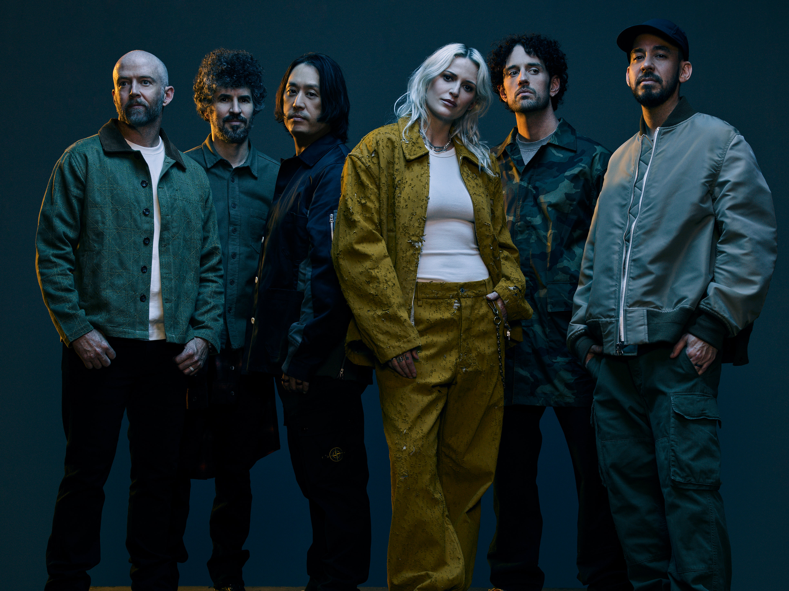

Про гурт
Linkin Park — американський рок гурт, заснований у 1996 році. Гурт став одним із найуспішніших представників альтернативного року та ню-металу.
Їх музика поєднує рок, реп, електроніку та емоційний вокал, що зробило Linkin Park унікальними серед інших гуртів.
Світову популярність гурт отримав після виходу дебютного альбому Hybrid Theory, який став одним із найуспішніших рок альбомів 2000-х років.
Спочатку гурт мав назву Xero, але пізніше був перейменований у Hybrid Theory, а згодом — у Linkin Park.
У 2000 році гурт випустив альбом Hybrid Theory, який приніс їм світову славу. Пісні In the End, Crawling та One Step Closer стали міжнародними хітами.
Протягом своєї кар'єри Linkin Park експериментували зі звучанням, додаючи електронну музику, поп та навіть елементи індастріалу.
Після смерті Честера Беннінгтона у 2017 році гурт тимчасово припинив активну діяльність.
Учасники гурту
- Емілі Армстронг — вокал
- Майк Шинода — реп, вокал, клавішні
- Бред Делсон — гітара
- Джо Хан — діджей, семпли
- Роб Бурдон — ударні
- Дейв Фаррелл — бас-гітара

Найпопулярніші пісні
- In the End
- Numb
- Crawling
- Breaking the Habit
- Faint
- Somewhere I Belong
- One More Light
- What I've Done
Альбоми
- Hybrid Theory (2000)
- Meteora (2003)
- Minutes to Midnight (2007)
- A Thousand Suns (2010)
- Living Things (2012)
- The Hunting Party (2014)
- One More Light (2017)
Концерти та виступи
Linkin Park були відомі своїми енергійними концертами та сильним емоційним зв'язком із фанатами.
Гурт виступав на найбільших музичних фестивалях світу та збирав стадіони у багатьох країнах.
Їхні живі виступи поєднували потужний вокал, реп партії Майка Шиноди та електронні ефекти.